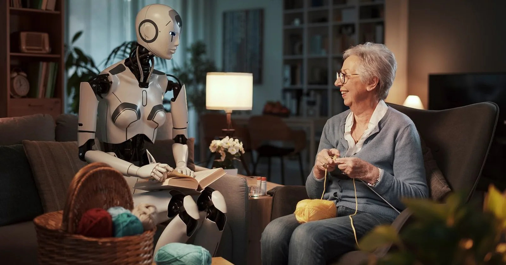
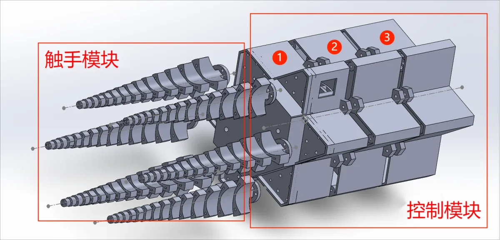
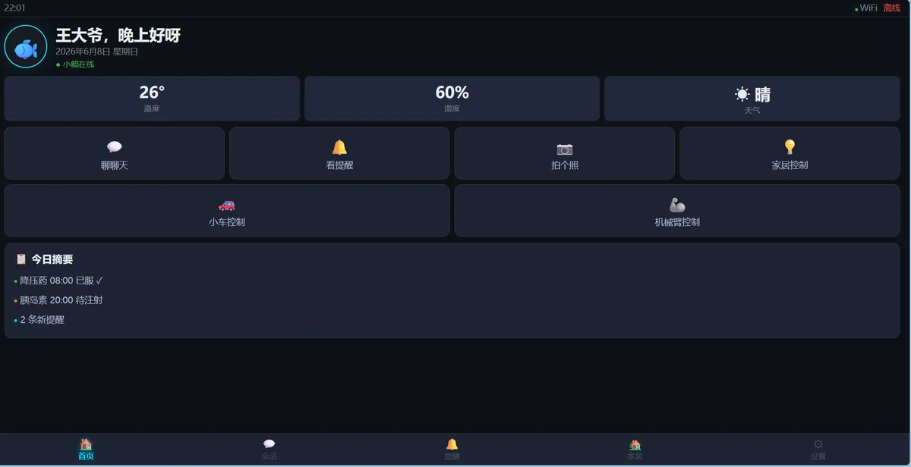
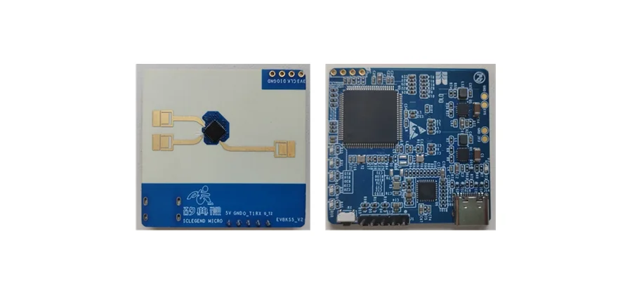
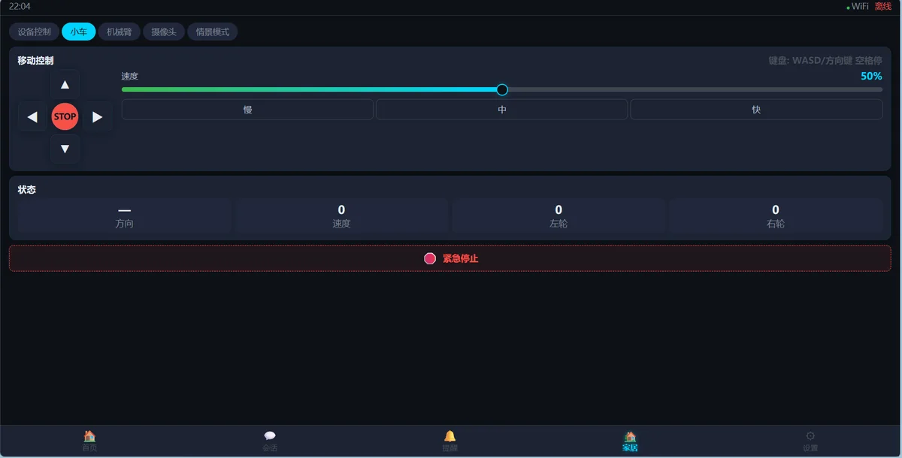
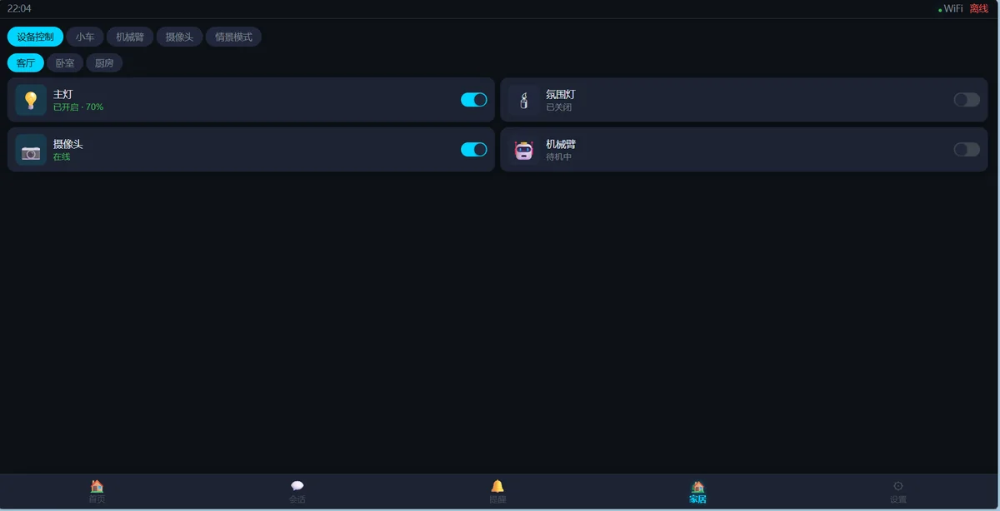

Project
从“会说话”到“能帮忙”的家庭机器人
养老陪护产品大多停留在语音对话和提醒层，小鲲把移动、抓取、监测和决策合在一个可落地的服务机器人里。
面向真实照护任务的整机系统
小鲲第二代围绕四个关键问题升级：柔性抓取、低成本深度视觉、厘米级SLAM导航、抗干扰姿态感知，并新增Agent总控、适老化UI和毫米波健康监测。
仿生章鱼手，抓取成功率95%+
激光+视觉SLAM，动态避障<0.1秒
呼吸/心跳24h无感监测
大模型Agent自主拆解任务并执行
Positioning
五维能力对比
| 对比维度 | 小鲲 | 优颐然 | 宇树G1 | ElliQ | Amazon Astro |
|---|---|---|---|---|---|
| 抓取能力 | 仿生章鱼手，95%+ | 刚性机械爪，<70% | 力控3指，有限 | 无 | 无 |
| 导航精度 | 融合SLAM，厘米级 | <25cm，<10° | 需二次开发 | 无 | 视觉SLAM |
| 健康监测 | 毫米波雷达24h | 跌倒检测 | 无 | 无 | 无 |
| 智能化 | Agent自主决策 | 规则引擎 | 大模型理解 | GPT对话 | Alexa |
| 价格定位 | 万元级 | 数十万+ | 9.9万 | 订阅制 | 1599美元 |
Technology
六大技术模块支撑整机能力
从物理操作到主动守护，小鲲不是单点功能拼装，而是围绕家庭服务任务建立的整机能力。
仿生章鱼手抓取
从规则硬物扩展到几乎所有日常物品
柔性触手可自适应玻璃杯、衣物、钥匙、水果等不同形状与材质，将第一代机械掌<60%的成功率提升到95%+。
95%+目标抓取成功率
6条线控柔性触手
260倍最大负载/自重比
第一代机械掌只能抓规则硬质物体，面对衣服、玻璃杯、钥匙等日常物品稳定性不足。
以柔性触手包络目标，通过双电机协同控制张力，降低对精确夹持姿态的依赖。
把机器人从“移动平台”推进到能真正拿取、递送和辅助照护的服务设备。
执行流程
- 深度相机获取目标轮廓与空间坐标
- 逆运动学求解末端姿态与接近路径
- 触手包络目标并进行张力闭环控制

Demo
实机演示与系统界面
网页内保留 PPT 中的原始演示素材，并压缩成更适合浏览器播放的版本。
机械臂与末端执行器
机械臂端侧控制与视觉定位联动，完成物品接近、姿态调整和末端执行器动作。
室内导航实机验证
手机拍摄记录小车在桌椅、门框和狭窄通道之间完成路径跟踪与动态避障。
SLAM建图与路径仿真
电脑录屏展示 gmapping 建图、局部路径生成和导航重规划过程，补足算法侧演示证据。

零学习成本UI
大字体、高对比、一键直达，覆盖控制、对话、用药、紧急联系、情景模式和家属维护。

健康监测硬件
毫米波雷达模块可接入移动平台，实现无佩戴、无图像隐私风险的呼吸和心跳监测。
Market
刚性需求正在放大，复杂物理操作仍是空白
中国60岁以上人口已达3.1亿，2035年将突破4亿；养老护理员缺口约550万，独居与空巢老人规模持续扩大。
3.1亿中国60岁以上人口
550万养老护理员缺口
300亿元国内养老机器人市场规模
System
新增三大模块，补齐家庭陪护闭环

Agent硬件智能体
Kimi k2 + DeepSeek双引擎，负责自然语言理解、任务拆解、步骤规划、执行反馈和技能复用。

适老化可视化UI
12大功能模块覆盖首页、控制、AI对话、用药管理、健康数据、紧急联系和情景模式。
毫米波雷达健康守护
无需佩戴设备，穿透衣物被褥，监测呼吸与心跳，异常自动报警并保护隐私。
Business
硬件销售 + 订阅服务 + 平台生态
以硬件进入家庭和养老机构，再通过健康监测、维护服务、定制化功能和开放平台建立持续收入。
硬件销售
高端版面向养老社区和机构，标准版面向普通家庭，入门版面向大众市场。
订阅服务
24h健康监测、异常报警、健康报告、定期巡检、软件升级与硬件保养。
平台生态
开放API接入第三方开发者，与养老机构、社区、医院形成B端解决方案。
Roadmap
三年落地规划
产品验证与试点
完成整机组装联调、产品认证、小批量生产100台，与5家养老机构试点合作。
规模化与市场扩张
销量突破1万台，覆盖全国20个城市，建立线上线下渠道并推出健康监测订阅。
品牌升级与出海
推出第二代产品，拓展东南亚、日本等市场，开放平台API生态并启动B轮融资。
Team
跨学科团队，覆盖机器人全栈能力
成员来自华为、中科大、中山大学、香港中文大学（深圳）等背景，覆盖硬件工程、嵌入式、AI算法、大模型应用、工业设计和产品设计。

赵宇航
CEO
中山大学本科 / 港中深PhD在读，精通Embodied AI，熟悉软硬件全链路。

甘德成
CTO
中山大学本硕在读，精通嵌入式开发、具身模型端侧部署、模型研究和3D设计。

张槿婉
COO
中山大学本科 / 港中深硕士在读，精通SLAM算法、车机底盘开发与机器人SDK。

许康杰
CFO
中山大学本硕在读，精通LLM与多模态模型研发，擅长UI设计和多语言编程。

冯毅轩
CIO
中山大学本硕在读，精通雷达生命体征检测，擅长嵌入式开发和电路设计。

李秉熠
技术骨干
中山大学本科在读，擅长AI辅助编程、3D设计和工程开发，动手能力强。

唐子昊
技术骨干
中山大学本科在读，擅长运动控制、项目迁移与机器人运动系统调试。
Funding
正在寻找30万-100万美元融资
资金用途：研发40% | 生产30% | 市场20% | 团队10%。